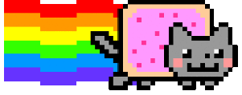

permalink: /404.html
William's 404
ooops, parece que você se perdeu
Ou eu apaguei esta página. Na verdade eu apaguei várias páginas, então acho que foi isso!
Clique aqui
ou no gatinho para voltar para a página inicial.
